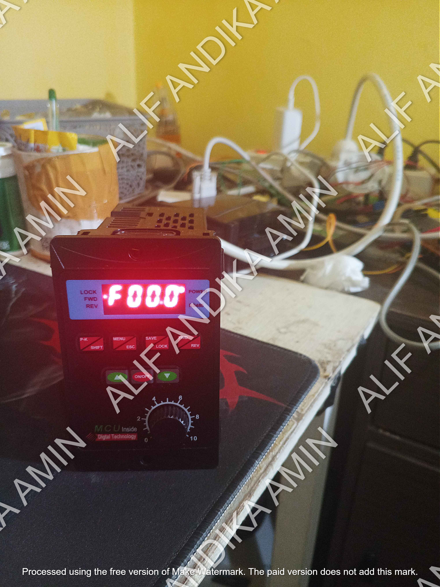

VFD adalah singkatan dari Variable Frequency Drive, yang dalam bahasa Indonesia berarti Penggerak Frekuensi Variabel. VFD adalah perangkat elektronik yang digunakan untuk mengontrol kecepatan motor listrik dengan cara mengubah frekuensi dan tegangan catu daya yang diberikan ke motor.
Komponen yang digunakan adalah VFD dengan tipe T13-750W-12-H
Pada project kali ini saya melakukan lokal kontrol pada VFD, tujuan dilakukan project ini adalah agar dapatr melakukan kontrol VFD dari jarak jauh dengan menggunakan kabel dan potensio dengan mennggunakan :
1. Breadboard
2. Jumper
3. Potensio